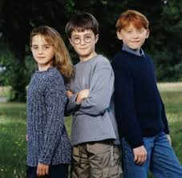

Film
The film Harry Potter and the Philosopher's Stone was released in 2001. It was directed Chris Columbus and distributed by Warner Bros. Pictures. The film became a massive commercial success, grossing $974.8 million at the box office worldwide, making it the highest-grossing film of 2001.
Cast
Among the actors are Daniel Radcliffe (Harry Potter), Ruppert Grint (Ron Weasley) and Emma Watson (Hermione Granger). At the time of shooting the film, they were 11, 12 and 10 respectively. When selling the rights for the film, J.K. Rowling urged that the whole cast would be British, which the producers of the film agreed with. Other noticeable actors are John Cleese (Nearly Headless Nick), Robbie Coltrain (Rubeus Hagrid), Alan Rickman (Severus Snape) and Maggie Smith (Minerva McGonagall).
Music
The music was created by the respected composer John Williams, who is also known for his work on Jurassic Park, Jaws and Star Wars, among others films. Although different composers would replace Williams in later films, his composition Hedwig's Theme contains one of Hollywood's most memorable melodies, which is used throughout the Harry Potter series.
Differences from book
Not all fans of the Philosopher's Stone book are too keen on the movie version, mainly because there are differences between the two. A few examples:
- Peeves the poltergeist appears in the book, but not in the movie.
- In the book, Harry's aunt and uncle have blonde hair, whereas in the movie they have black hair.
- In the book, the sorting hat always sings a song before sorting new students of Hogwarts in their houses. In the movie, this doesn't happen.
- When looking in the Mirror of Erised, Harry sees his parents, grandparents and a lot of others family members. In the movie, he only sees his parents.
Reception
The movie was greatly received at the box office. It made $32.3 million on the opening day, breaking the single day record previously held by Star Wars: Episode I - The Phantom Manace. In total, it made $90.3 million during the opening weekend, also breaking the record of highest-opening weekend of all time, previously held by The Lost World: Jurrasic Park.
The film received many nominations, including three of the Academy Award: Best Art Direction, Best Costume Design and Best Origin Score for John Williams. It was also nominated for several BAFTA awards and many others. The Philosopher's Stone also won a lot of awards, including a Saturn Award for costume design, Best Live Action Family Film, among others.
Source: Wikipedia, "Harry Potter and the Philosopher's Stone (film)"